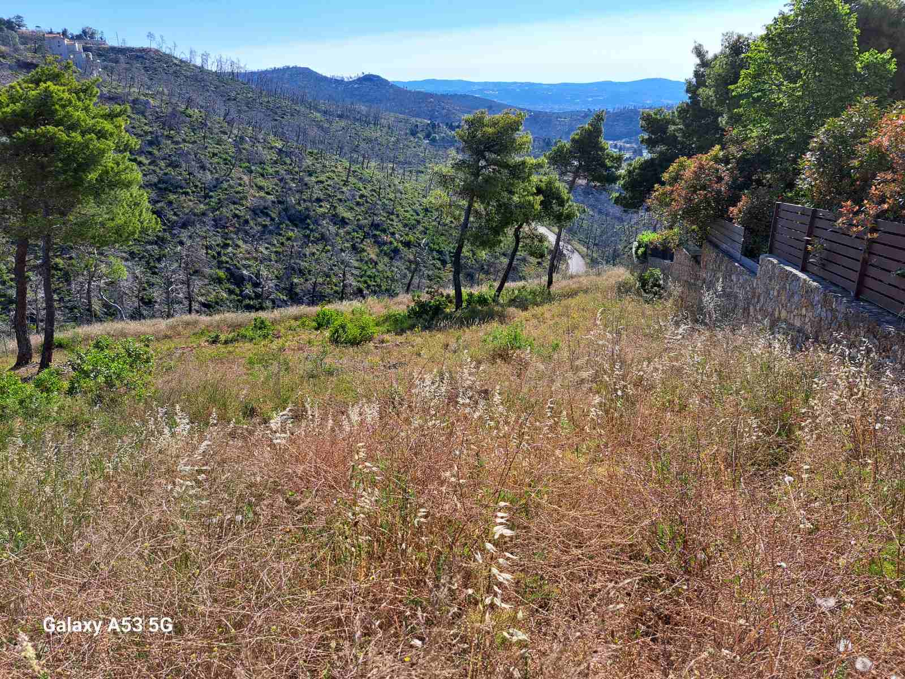
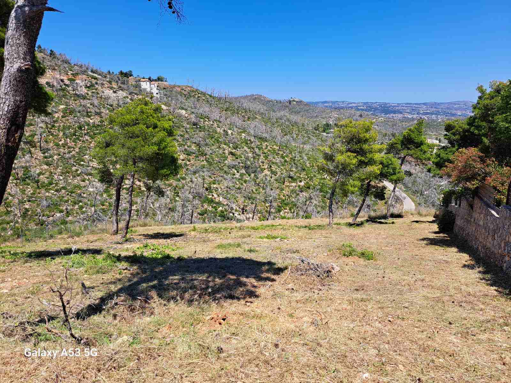
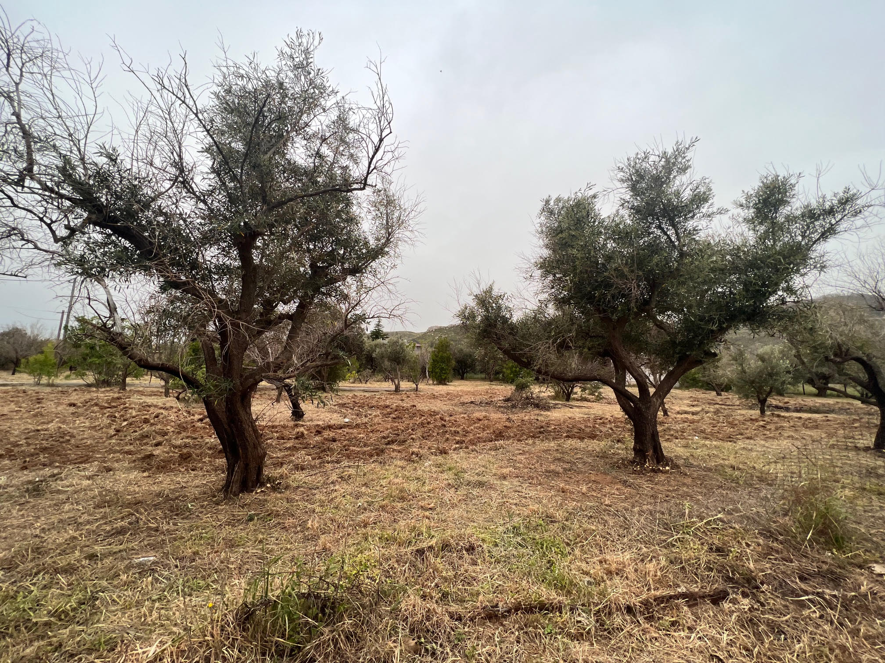
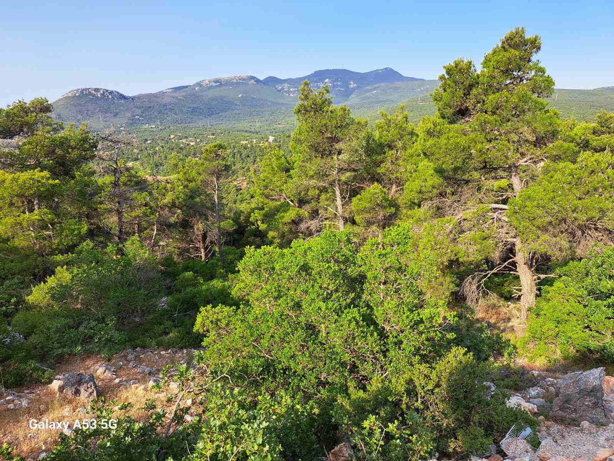
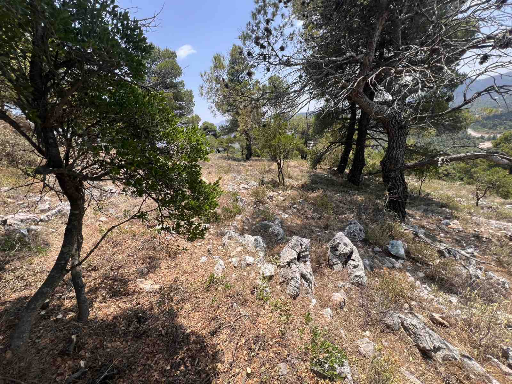

Πριν

Μετά
Αποτελέσματα που μιλούν από μόνα τους — πριν & μετά τον καθαρισμό
Παρακάτω μπορείτε να δείτε ενδεικτικά έργα που έχουμε ολοκληρώσει σε διάφορες περιοχές της Αττικής. Κάθε φωτογραφία «πριν» και «μετά» αντικατοπτρίζει τη δέσμευσή μας για ποιοτική δουλειά.
Ζητήστε δωρεάν εκτίμηση για το δικό σας οικόπεδο.
Επικοινωνήστε μαζί μας στο +30 698 344 9392





